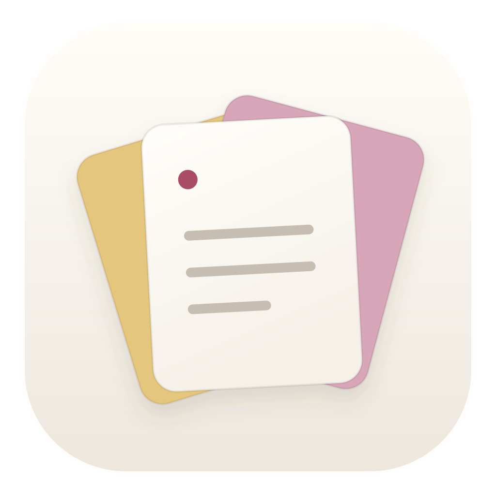

想到，就行动。
[] 加空格写待办，/ 选择格式。
让每个小动作都顺手。

jot.每种念头，都有自己的颜色。
选一页，试着写写 ↓轻轻写下，安心放下
一个菜单栏小窗，七页独立便签。
不用新建文件，也不用先想好怎么分类。
03日常
输入 [] 加空格，或 / 选择格式
NEW IN 0.2.1 · 留在顺手的地方
像从菜单栏摘下一张便签。
要专注时，留在桌边；用完，再轻轻送它回去。
拖一下，就留在桌边拖动顶部空白处，自动进入自由移动模式并置顶。
点一下，回到菜单栏左上角模式图标一键归位，关闭按钮仍可随时收起。
随手移动，安心记录模式切换保留正文。图钉独立控制置顶，支持减少动态。
网页为交互演示，不会读取或保存你的便签。应用中的窗口可以移到桌面任意位置。
NEW IN 0.2 · 八种外观，一样轻巧
有时想写得整齐，有时只想随意一点。
挑一张纸，让每次打开都更像自己。
悬停试穿，点击选定。
也可以用方向键浏览，再按 Enter 选择。
慢一点，也在往前。
所有主题免费使用 · 应用右下角随时换肤 · 字体与装饰可单独调整
[] 加空格写待办，/ 选择格式。
让每个小动作都顺手。
内容自动保存在本机。
需要的时候，随手唤出。
导出 Markdown，
让记录继续它的下一站。
你可能想知道
正式应用在本机自动保存，无需账号，日常书写无需联网。目前没有云同步。此网页演示仅保留在当前页面，刷新即重置。
支持待办、标题、引用、列表和常用文本格式。[] 加空格创建待办，/ 选择格式。原生应用支持将内容导出为 Markdown。
可以下载 0.2.1 预览版，支持 macOS 14 及更新系统、Apple 芯片和 Intel。当前未经 Apple 公证，首次打开可能被 macOS 拦截。查看下载与安装说明 ↗
给忙碌的日常，留一点余地
开始使用
当前为未经 Apple 公证的预览版。
打开 DMG，将 Jot 拖入 Applications（应用程序）。
在访达的“应用程序”中打开 Jot，再点击菜单栏图标开始记录。
确认下载来源可信后，前往“系统设置 → 隐私与安全性”，找到 Jot 的提示，点击“仍要打开”并按提示确认。